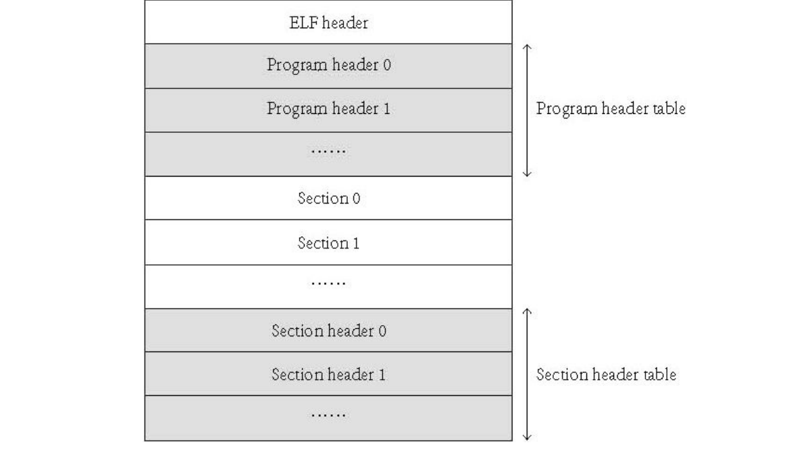
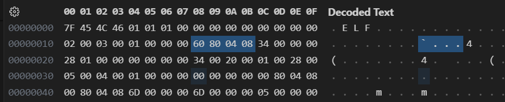
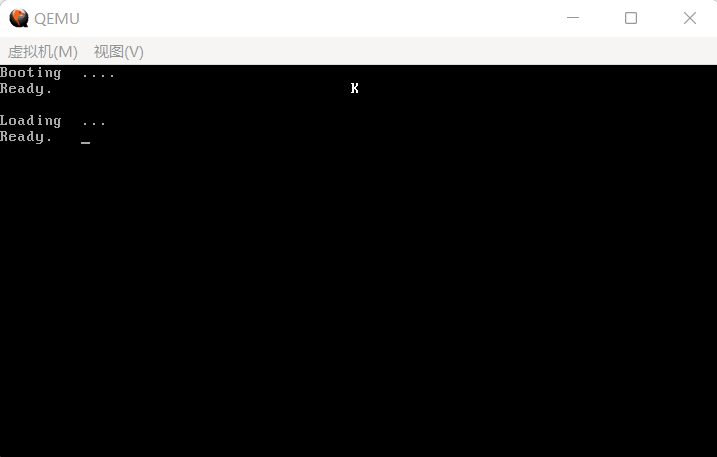

06 重新放置内核并进入内核
进入保护模式之后我们的目标只有一个，那就是随之跳入内核。不过，既然我们的内核是有格式的（ELF），我们需要先分析一下 ELF 格式到底长什么样子，如下图所示：

（图 6-1 ELF 文件结构）
由于我们需要寻找的是真正的二进制代码的所在位置，所以我们先直接进入对 Program Header 的分析。此处用表就不太合适了，下面的代码便是对 Program Header 结构的描述：
代码 6-1 Program Header
typedef struct {
Elf32_Word p_type; // 当前header描述的段类型
Elf32_Off p_offset; // 段的第一个字节在文件中的偏移
Elf32_Addr p_vaddr; // 段在内存中的虚拟地址
Elf32_Addr p_paddr; // 段在内存中的物理地址，为兼容不进入保护模式的OS
Elf32_Word p_filesz; // 段在文件中的长度
Elf32_Word p_memsz; // 段在内存中的长度
Elf32_Word p_flags; // 与段相关的标志
Elf32_Word p_align; // 确定段在文件和内存中如何对齐
} Elf32_Phdr;
其中的所有数据类型（Elf32_Word、Elf32_Off 和 Elf32_Addr） 均为大小为 4、对齐也为 4 的无符号类型，而 Word 为大整数，Off 为偏移，Addr 为地址。
那么如果一段
ELF有很多个段该怎么办？我们怎么知道这个ELF段的数量？
这时我们就需要前面的 ELF header 了，下面的代码是它的结构：
代码 6-2 ELF 头
#define EI_NIDENT 16
typedef struct {
unsigned char e_ident[EI_NIDENT]; // ELF特征标
Elf32_Half e_type; // 文件类型
Elf32_Half e_machine; // 运行至少需要的体系结构
Elf32_Word e_version; // 文件版本
Elf32_Addr e_entry; // 程序的入口点
Elf32_Off e_phoff; // Program Header 表的偏移
Elf32_Off e_shoff; // Section Header 表的偏移
Elf32_Word e_flags; // 对于32位系统为0
Elf32_Half e_ehsize; // ELF Header 的大小，单位字节
Elf32_Half e_phentsize; // Program Header 的大小
Elf32_Half e_phnum; // Program Header 的数量
Elf32_Half e_shentsize; // Section Header 的大小
Elf32_Half e_shnum; // Section Header 的数量
Elf32_Half e_shstrndx; // 包含 Section 名称的字符串表位于哪一项
} Elf32_Ehdr;
其中出现的新类型只有 Elf32_Half（unsigned char 大家肯定很熟悉就不算了），它代表一个无符号中等大小整数，大小和对齐均为 2 字节。
对于 ELF 的研究就到此为止，后续的细节我们在代码当中说明……但此时还有一个小问题，下图是目前的 kernel.bin 的样子。

（图 6-2 目前的 kernel.bin）
我用蓝色标出来的位置，根据计算不难发现是 e_entry，它已经位于0x8000000（128MB）以外，但根据我们的默认设置，我们的内存大小只有128MB。另一方面来讲我们可以通过分页来调低这个位置，但它的具体位置也是不可控的。
那么我们就只剩下一条路了：手动更改 e_entry 的值。事实上，这个过程只需要修改一下编译命令：
nasm -f elf -o kernel.o kernel.asm
i686-elf-ld -s -Ttext 0x100000 -o kernel.bin kernel.o
我们把它的入口点定在了 0x100000，因为这里刚好是1MB，可以避开前面错综复杂的势力。
说了这么半天，我们到底如何重新放置内核？根据前面的分析，我们只需要重复执行与下列 C 语句相同的指令即可：
代码 6-3 我们的目标
memcpy(p_vaddr, BaseOfKernelFilePhyAddr + p_offset, p_filesz);
这时候我们忽然惊奇地发现，我们还没有内存拷贝用的函数，而且连保护模式下的堆栈都没有，甚至对各种段寄存器的处理都欠佳。不要紧，马上修改：
代码 6-4 修整保护模式（loader.asm）
[section .s32]
align 32
[bits 32]
LABEL_PM_START:
mov ax, SelectorVideo ; 按照保护模式的规矩来
mov gs, ax ; 把选择子装入gs
mov ax, SelectorFlatRW ; 数据段
mov ds, ax
mov es, ax
mov fs, ax
mov ss, ax
mov esp, TopOfStack
; cs的设定已在之前的远跳转中完成
jmp $
MemCpy: ; ds:参数2 ==> es:参数1，大小：参数3
push ebp
mov ebp, esp ; 保存ebp和esp的值
push esi
push edi
push ecx ; 暂存这三个，要用
mov edi, [ebp + 8] ; [esp + 4] ==> 第一个参数，目标内存区
mov esi, [ebp + 12] ; [esp + 8] ==> 第二个参数，源内存区
mov ecx, [ebp + 16] ; [esp + 12] ==> 第三个参数，拷贝的字节大小
.1:
cmp ecx, 0 ; if (ecx == 0)
jz .2 ; goto .2;
mov al, [ds:esi] ; 从源内存区中获取一个值
inc esi ; 源内存区地址+1
mov byte [es:edi], al ; 将该值写入目标内存
inc edi ; 目标内存区地址+1
dec ecx ; 拷贝字节数大小-1
jmp .1 ; 重复执行
.2:
mov eax, [ebp + 8] ; 目标内存区作为返回值
pop ecx ; 以下代码恢复堆栈
pop edi
pop esi
mov esp, ebp
pop ebp
ret
[section .data1]
StackSpace: times 1024 db 0 ; 栈暂且先给1KB
TopOfStack equ $ - StackSpace ; 栈顶
下面便是本节最后的工作了。首先我们重新放置内核：
代码 6-5 重新放置内核（loader.asm）
[section .s32]
align 32
[bits 32]
LABEL_PM_START:
mov ax, SelectorVideo ; 按照保护模式的规矩来
mov gs, ax ; 把选择子装入gs
mov ax, SelectorFlatRW ; 数据段
mov ds, ax
mov es, ax
mov fs, ax
mov ss, ax
mov esp, TopOfStack
; cs的设定已在之前的远跳转中完成
call InitKernel ; 重新放置内核
jmp $
...略去MemCpy...
InitKernel:
xor esi, esi ; esi = 0;
mov cx, word [BaseOfKernelFilePhyAddr + 2Ch] ; 这个内存地址存放的是ELF头中的e_phnum，即Program Header的个数
movzx ecx, cx ; ecx高16位置0，低16位置入cx
mov esi, [BaseOfKernelFilePhyAddr + 1Ch] ; 这个内存地址中存放的是ELF头中的e_phoff，即Program Header表的偏移
add esi, BaseOfKernelFilePhyAddr ; Program Header表的具体位置
.Begin:
mov eax, [esi] ; 首先看一下段类型
cmp eax, 0 ; 段类型：PT_NULL或此处不存在Program Header
jz .NoAction ; 本轮循环不执行任何操作
; 否则的话：
push dword [esi + 010h] ; p_filesz
mov eax, [esi + 04h] ; p_offset
add eax, BaseOfKernelFilePhyAddr ; BaseOfKernelFilePhyAddr + p_offset
push eax
push dword [esi + 08h] ; p_vaddr
call MemCpy ; 执行一次拷贝
add esp, 12 ; 清理堆栈
.NoAction: ; 本轮循环的清理工作
add esi, 020h ; 下一个Program Header
dec ecx
jnz .Begin ; jz过来的话就直接ret了
ret
其中又有很多新的常量：
代码 6-6 新常量（load.inc）
BaseOfLoader equ 09000h ; Loader的基址
OffsetOfLoader equ 0100h ; Loader的偏移
BaseOfLoaderPhyAddr equ BaseOfLoader * 10h ; Loader被装载到的物理地址
BaseOfKernelFile equ 08000h ; Kernel的基址
OffsetOfKernelFile equ 0h ; Kernel的偏移
BaseOfKernelFilePhyAddr equ BaseOfKernelFile * 10h ; Kernel被装载到的物理地址
KernelEntryPointPhyAddr equ 0x100000 ; Kernel入口点，一定要与编译命令一致！！！
可能有聪明的读者就要问了：
所以为啥不Init完直接进呢？？？
有点仪式感（bushi），你看之前进 Loader，一点仪式感没有，平平淡淡地就进了（
好那么我们最后重视一下这仪式感吧，下面是进入内核的远跳转，请用它代替 jmp $：
代码 6-7 跳入内核（loader.asm）
jmp SelectorFlatC:KernelEntryPointPhyAddr
运行结果如图：

（图 6-3 运行结果）
运行地非常成功，这不仅代表着我们可以让汇编仅起辅助作用，更是我们的操作系统的一个重要成果。
但是我既没有说后面不用汇编，也没有说 Loader 的工作到此结束，事实上后面我们可能还要再对 Loader 进行一次大改。
那么我们就暂时维持着 Kernel 现在的样子，进入下一节的内容。